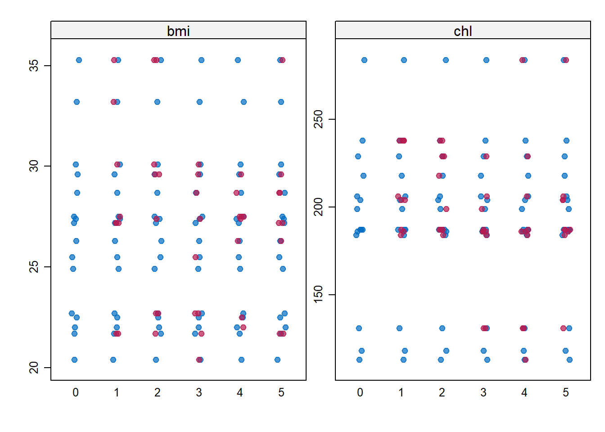

1Implementation of Imputation Likelihood Methods in Estimating Missing Data Values in R
Published
March 13, 2025
1.1 Introduction
Data has become the lifeblood on today’s world. It is used in almost every industry to track, organize, and solve businesses problems. This is why it is more crucial than ever to understand how to handle data properly to get results that can help you grow your business. One of the issues that comes across when analyzing a data set in dealing with missing values. Our first instinct is to throw those values out and analyze that data that we do have, yet this is not a viable option according to Little, Little (2021). Little discusses in his paper a variety of ways to properly estimate missing values in a data set, one option is imputation likelihood methods. This method allows you to get estimates for your missing values which intern allows you to get accurate information from your data set as a whole. A package called “mice” found in R can complete these missing data estimations which allow you to properly analyze your data, Van Buuren and Groothuis-Oudshoorn (n.d.). This guide will attempt to discuss the processes and methods involved with using this package on a data set. This example will be used as a guide to understanding how to implement this package on future data that you may come across.
1.2 Prerequisites
The prerequisites to understanding how to use this package are basic statistical knowledge and ability on par with running a linear model in R. You have to understand how to recognize missing data and how to classify variables, numerical, categorical, etc. Knowing what missing data is. You must understand the basics of matrices along with applying different manipulations to data. The software needed to complete this task can be found in the R packages lattice and mice for the simple example which will be described in detail below. There is other packages that the you may need but that will be on a case by case basis.
1.3 Explanation of Example
1.3.1 Motivation
The example from the mice package will show the basics of how and when to use this package to estimate missing values in a data set. This will allow you to have a basis of understanding regarding estimation of missing values using the mice package.
1.3.2 Example
The first step of this example is to load in the mice package. The next object is to load in an example data set from the mice package for demonstration. In most cases your data set will be loaded in before you call you package. This will allow you to see the structure of the data and if the mice package is necessary.
# Load required packagelibrary(mice)
Warning: package 'mice' was built under R version 4.3.3
Warning in check_dep_version(): ABI version mismatch:
lme4 was built with Matrix ABI version 1
Current Matrix ABI version is 0
Please re-install lme4 from source or restore original 'Matrix' package
Attaching package: 'mice'
The following object is masked from 'package:stats':
filter
The following objects are masked from 'package:base':
cbind, rbind
# Load example datasetdata(nhanes2)head(nhanes2)
age bmi hyp chl
1 20-39 NA <NA> NA
2 40-59 22.7 no 187
3 20-39 NA no 187
4 60-99 NA <NA> NA
5 20-39 20.4 no 113
6 60-99 NA <NA> 184
# Check the structure of the datasetstr(nhanes2)
'data.frame': 25 obs. of 4 variables:
$ age: Factor w/ 3 levels "20-39","40-59",..: 1 2 1 3 1 3 1 1 2 2 ...
$ bmi: num NA 22.7 NA NA 20.4 NA 22.5 30.1 22 NA ...
$ hyp: Factor w/ 2 levels "no","yes": NA 1 1 NA 1 NA 1 1 1 NA ...
$ chl: num NA 187 187 NA 113 184 118 187 238 NA ...
We can see from the output provided we can see that type of variables we are dealing with along with what they will be coded as in the data set. We can see that we have 25 observations with 4 variables. We can also see the type of each variable which will come in handy later when selecting the imputation method to estimate the missing values.
The next step is optional and it is to create a plot that will allow you to see where the missing values are in your data set.
This graph shows us the pattern of missingness between variables. This plot can be broken down into different parts, the bottom row tells you how many missing values are in each variable. The red boxes show missing values while blue boxes show non - missing values. The left hand column shows the number of rows that follow the missingness pattern, while the right hand column shows the number of missing values in each row. This graph gives us a visual description of the data and the mssingness pattern throughout. You can make this graph to deepen your understanding of the missingness patterns in your data which paint a better picture than just the structure of the data.
You now understand the missingness pattern in the data you must now apply methods of estimations for the mice package. You can do this by understanding how each variable is categorized. We can look back at the structure of the data found in step 1. This will allow us to see how to apply methods of estimation as it is based on the type of variables you are dealing with.
This chart allows you to see how to select imputation methods based on what type of variables you have. It is not necessary to understand deeply how these imputation methods work to run and execute the code flawlessly. Yet more information will be provided later in the paper via the vignette for this package. In our case we have four variables: Age, bmi, hyp, chl. We know that age is a factor with 3 levels so it is a multilevel categorical variable. We also know that bmi and chl are numerical. Finally we know from step two that hyp is a factor with 2 levels and is intern binary data. Described in the chart above.
You will now create the vector for our methods section.
# Define the imputation method for each variablemeth <-c("polyreg", "pmm", "logreg", "pmm") # logreg for binary, polyreg for categorical
This will now allow you to properly estimate your missing values based on each imputation method that you have chosen.
The next step in this process is to understand what our prediction matrix is and how to do it assemble it.
# Define the predictor matrix (set diagonal to 0)pred_matrix <-quickpred(nhanes2)pred_matrix
The prediction matrix is a necessary part of the imputation calculation it tells us what values to use in the estimation process. The first row is aobu the variable age, if you remeber from the missingness graph in step 2, we know that age has no missing values and there for has all zeros in the first row. The second row of the matrix is describing bmi, we can see that we have a 1 in the columns of age, hyp, and chl. This means for the variable bmi we have missing values and the package will use age, hyp, and chl to estimate the missing values of bmi. This same process takes place for the remaining two columns.
Our next step is finally to complete our imputation of the data.
The function mice will run the imputation and create the basis for the best estimation with your data. You should have a good understanding of every part of this function besides the m and maxit sections. The m section is the number of imputed data sets that were created, 5 being a base number. The maxit section is the number of iterations were used for the imputation algorithm. These values are both base values and can be changed depending on the situation.
The next step is to summarize the imputation data and compare the imputed data with the original data set.
# Check summary of imputed datasummary(imp)
Class: mids
Number of multiple imputations: 5
Imputation methods:
age bmi hyp chl
"" "pmm" "logreg" "pmm"
PredictorMatrix:
age bmi hyp chl
age 0 0 0 0
bmi 1 0 1 1
hyp 1 0 0 1
chl 1 1 1 0
# Compare original vs. imputed datastripplot(imp, pch =20, cex =1.2)

When you run this code you see how many imputed data sets you have. In other words how many estimations you have for the missing values. This is a harder topic to understand but in the code above it was specified to impute 5 data sets which means we get five estimates for each missing value. This allows us to pool this information in linear regression which will be show later. We also see the summary of the methods used for each variable. In the output we also get a graphs that compares the values from the numerical variables that were imputed, bmi and chl. This graph has for columns, 0 is the original data and 1 - 5 are each imputed data set. The blue dots are the original data and the pink dots are the imputed estimates. This graphs allows us to see how the estimates compare to the original data. In our case we can see that the imputed values fit very will with the original data and we do not see anything that does not look realistic.
The final step in our example is to fit a linear model with the data and pool across all imputed data sets to get a result. You can then compare the results of the pooled data vs the original data without missing values and see how you estimates would be different.
# Analyze each imputed dataset and pool results (Example: Regression model)fit <-with(imp, lm(bmi ~ age + hyp + chl))pooled <-pool(fit)summary(pooled)
The function with combines your imputed data with the linear model example above. The pool function then pools across all imputed data sets and gives you an average of all of your estimates, in our case 5. You then have a linear model “pool” that you can summarize and compare with our original data set with out imputation and missing values.
clean_data <-na.omit(nhanes2)fit1 <-lm(bmi ~ age + hyp + chl, clean_data)summary(fit1)
Call:
lm(formula = bmi ~ age + hyp + chl, data = clean_data)
Residuals:
Min 1Q Median 3Q Max
-5.2752 -1.5329 0.0223 1.7676 4.2609
Coefficients:
Estimate Std. Error t value Pr(>|t|)
(Intercept) 14.96300 4.26799 3.506 0.00801 **
age40-59 -6.61839 2.30156 -2.876 0.02065 *
age60-99 -11.18114 3.36170 -3.326 0.01045 *
hypyes 2.36161 2.53536 0.931 0.37886
chl 0.07954 0.02445 3.253 0.01164 *
---
Signif. codes: 0 '***' 0.001 '**' 0.01 '*' 0.05 '.' 0.1 ' ' 1
Residual standard error: 3.234 on 8 degrees of freedom
Multiple R-squared: 0.6697, Adjusted R-squared: 0.5046
F-statistic: 4.055 on 4 and 8 DF, p-value: 0.04379
From the two summary statements above you can see that you have a vast difference in the estimates of the coefficients between fit1 without the NA values and pooled with estimates for missing values. This allows you to understand that estimating for missing values does have a major impact on the model and in the end the conclusions that you make.